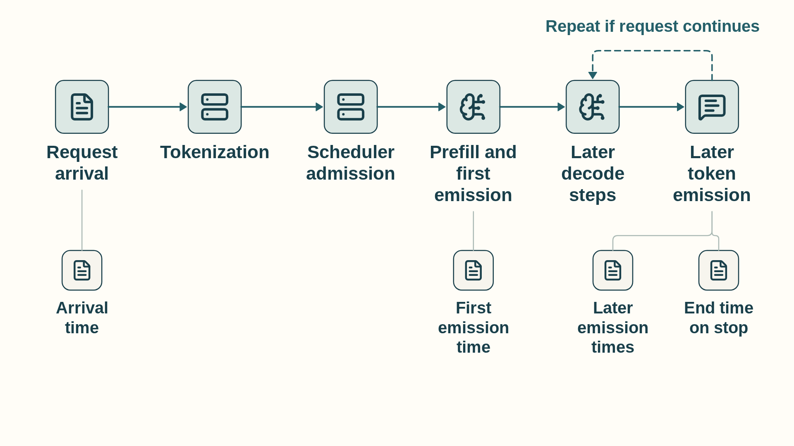

10 Inference phases and memory budgets
The training chapter followed a workload that changes model parameters. Inference starts from a loaded parameter set that normally stays fixed during a request and repeatedly applies it, but it still creates live software and memory objects: token IDs, temporary activations, logits, sampler state, request metadata, and a key-value cache that grows with the context.
One request has two different GPU phases, prefill and decode (Section 10.2), and they stress different hardware resources. Their shapes, reuse, and user-visible latency metrics differ, so neither phase should be assigned a bottleneck before it is measured.
Serving begins before the first GPU kernel: a request is tokenized, may wait for scheduler admission, and runs prompt prefill. The figure shows a request that continues after its first output. That token is not EOS, the output limit permits at least two tokens, and no other stopping condition has fired. A request that stops at the first output has no later decode step.

Each decode step reads the previous KV state, produces a new key and value pair plus logits, appends the new cache entry, and selects the next token. Time To First Token (TTFT), Inter-Token Latency (ITL), Time Per Output Token (TPOT), throughput, and goodput describe different parts of this path. The capacity budget must include weights, KV cache, temporary work, and allocator reserve.
10.1 Inference software objects
An inference request crosses several software objects before GPU kernels run. Tokenizer code creates token IDs, a model interface loads and executes the checkpoint, generation utilities control the baseline token loop, and a serving engine later adds shared scheduling and cache management.
10.1.1 Tokenizers and token-count effects
A tokenizer is the CPU-side software that maps text to token IDs and back. Its vocabulary, normalization, special-token policy, and segmentation algorithm determine the token count that drives prefill work, decode length, and KV-cache growth.
AutoTokenizer: A Hugging Face Transformers factory that loads the tokenizer configuration associated with a checkpoint and returns a tokenizer object. Calling that object on text produces token IDs, masks, and batch encodings.- SentencePiece: A tokenizer implementation family used by many model checkpoints. Its model file defines the segmentation and vocabulary used to create token IDs.
- Hugging Face Tokenizers: A high-performance tokenizer implementation used by many Transformers workflows for batching, truncation, padding, and special-token handling.
For a particular input and chat template, the tokenizer produces the input token IDs and fixes the prompt length. The same character count can correspond to different prompt token counts. That length sets prefill work and the initial KV-cache size. The number of later decode steps depends instead on stopping criteria, requested output limits, and generation settings.
10.1.2 Model and checkpoint interfaces
A model interface creates the architecture and connects it to checkpoint tensors. Checkpoint loading determines storage format and startup behavior. Execution performance is later determined by placement, dtype, compiled or library kernels, and the serving runtime.
AutoModelForCausalLM: A Hugging Face Transformers factory for autoregressive language-model architectures and checkpoints. It is useful for experiments, correctness checks, and baseline generation loops.safetensors: A tensor serialization format designed for safe, direct metadata inspection and efficient checkpoint loading.- Model configuration: The architecture metadata that defines layer count, hidden dimensions, attention heads, vocabulary, and other dimensions needed to construct the model before weights are loaded.
- Checkpoint tensors: Persistent parameter values loaded into CPU or GPU memory. Their format and placement affect startup and capacity, while the selected runtime path controls steady-state execution.
10.1.3 Generation utilities and framework inference modes
Framework generation utilities provide a readable baseline token loop. PyTorch model mode and autograd mode must both be set correctly so inference uses evaluation behavior and avoids training-only bookkeeping. They do not by themselves make sampling or GPU execution deterministic.
Use model.eval() for evaluation behavior and a suitable no-gradient context to avoid autograd bookkeeping. torch.no_grad() permits later autograd use of tensors it creates. torch.inference_mode() has stricter limits. Neither setting alone guarantees deterministic sampling or GPU execution.
- Generation utilities: Transformers helpers for cache-aware generation, sampling, beam search, stopping conditions, and token-loop control. They are convenient for experiments and baseline measurements.
model.eval(): Changes module behavior such as dropout and batch-normalization statistics for evaluation or inference.torch.no_grad(): Disables gradient recording for enclosed operations, reducing autograd work and activation retention.torch.inference_mode(): Disables gradient recording and additional autograd bookkeeping. Tensors created in this context cannot later be used in computations recorded by autograd. Usetorch.no_grad()when later autograd use is needed.1- Combined use: Inference normally uses
model.eval()with an appropriate gradient-disabling context. One controls module semantics. The other controls autograd bookkeeping.
These preparation paths meet when the application passes the token IDs to the loaded model. Evaluation mode controls module behavior, and an inference context disables gradient bookkeeping during the generation loop. Chapter 13 introduces a serving engine when many requests must share admission control (deciding which waiting requests may start), batching and KV-cache blocks. Chapter 15 explains the service measurements used to assess those decisions.
10.2 Prefill versus decode
Prefill and decode are two phases inside autoregressive inference serving. They use the same model weights, but they create different tensor shapes and stress different hardware resources. Separating them makes phase-specific measurement and optimization possible.
- Prefill: Processes the prompt tokens, computes attention over the input prefix, and writes the initial key-value cache. It creates persistent KV state for later decode steps as well as temporary work, and usually has many tokens available at once.
- Decode: Generates one new token per active sequence and appends new keys and values to the cache. It repeats many times and often has less arithmetic reuse per request.
The first comparison holds the model fixed and contrasts the two phases by input shape, likely limiting work, user metric, and available token parallelism.
| Dimension | Prefill | Decode |
|---|---|---|
| Input shape | Many prompt tokens | One new token per active sequence |
| Common limiting work | Projection and attention compute over the prompt; short prompts may still expose launch or scheduling cost | Weight and KV reads, launches, and scheduler delay; the dominant bytes depend on batch and context |
| User metric | TTFT | TPOT |
| Parallelism | High token parallelism | Low per-request parallelism, improved by batching |
The arithmetic-intensity difference comes from reuse. During prefill, a batch contains many token positions, so projection weights and attention tiles can be reused across a larger matrix-shaped computation. During decode, each active sequence contributes only one new query token, while the step still reads model weights and a growing KV history. The same transformer block therefore behaves more GEMM-like in prefill and more GEMV-like or cache-streaming in small-batch decode.
| Phase | Reuse pattern | Arithmetic-intensity consequence | Capacity consequence |
|---|---|---|---|
| Prefill | Many prompt tokens reuse weights and attention tiles | Higher arithmetic intensity; tensor-core utilization is easier to recover | Long prompts increase TTFT and temporary activation/workspace pressure. They also create persistent KV-cache entries that affect admission and concurrency. |
| Decode | One new token reads weights and all relevant cached K/V state | Lower arithmetic intensity; HBM bandwidth, launch gaps, and scheduler overhead become visible | Long contexts and high concurrency mainly increase TPOT pressure and KV-cache capacity pressure |
Because the two phases have different limits, FLOPs, bytes, and phase-specific latency are measured separately. A prefill optimization can improve TTFT while doing little for TPOT, and a decode optimization can increase throughput while consuming more KV-cache capacity.
The phase split now gives the first measurement boundary. TTFT describes the path through admission and prefill to the first generated token. TPOT and inter-token latency describe the repeated decode path.
10.3 Serving metrics
Inference metrics describe different stakeholders. A user notices the first token, the smoothness of streaming, and total completion time. An operator notices tokens per second, requests per second, GPU utilization, and cost. A Service-Level Objective (SLO) turns these into a measurable target, such as ‘95% of requests receive their first token within 500 ms.’ A Service-Level Agreement (SLA) is the contract that promises such a target to a customer. Engineering work optimizes against the SLO.
One-request timestamp trace
- A request-timing record includes request arrival, first-token emission, each later token emission, and completion.
- Time To First Token (TTFT): Arrival to first-token emission.
- Inter-Token Latency (ITL): Each gap between consecutive output-token emissions.
- Time Per Output Token (TPOT) in this chapter: Excludes the first token and is the mean of the
n - 1decode intervals after first-token emission for a request withn > 1output tokens. Other systems may aggregate TPOT differently, so those conventions require relabeling or recomputation before comparison. - End-to-end latency: Arrival to completion.
Workload and operator metrics
- Report distributions of the chosen request-level measures, such as p50 and p95. A percentile is a value determined by a percentage position in ordered measurements: p50 uses the 50% position and p95 the 95% position. Selection or interpolation depends on the tool, so state that convention and keep the same aggregation convention when comparing runs.
- Throughput: Tokens or requests completed per second. State prompt length, output length, and workload mix.
- QPS (queries per second), goodput, and cost must be tied to the SLO and quality target. One query means one serving request here. Goodput counts only completed work that meets those targets.
\[ \text{E2E latency} \approx \text{TTFT} + (\text{number of output tokens} - 1) \times \text{TPOT} \tag{10.1}\]
In this approximation, the first output token is already included in TTFT. A response with n output tokens therefore contains n - 1 later decode intervals. TPOT is an average here. A production trace should also inspect the distribution of inter-token latency as batching, cache length, and scheduling change.
For example, if TTFT is 700 ms, the response has 20 output tokens, and average TPOT is 35 ms, then E2E latency is about 700 + 19 * 35 = 1365 ms. Long prompts mainly push TTFT because prefill must process many input tokens before streaming can begin. Long generations mainly push E2E latency through repeated decode steps. This is why the same optimization can improve one metric and harm another: larger batches can increase throughput and utilization while increasing queueing, TTFT, or ITL. These request times are also tied to concurrency: for a stable service, the average number of requests present equals the arrival rate times the average time each spends there. Cache residency depends on which of those requests have been admitted and retain KV state (Section 13.2.3).
10.4 Model weight size
Parameter sizing estimates the static model-weight footprint. It answers a different question from KV-cache sizing: weights are loaded once per replica or shard, while KV cache grows with active serving state. The estimate is useful for deciding whether a model fits on one GPU, one node, or a distributed group.
A transformer block is dominated by projection matrices. The formulas below are first-order approximations. Exact counts depend on vocabulary size, tied embeddings, grouped-query attention, bias terms, feed-forward expansion ratio, and architecture-specific details.
- Embeddings and language-model head: V * d parameters when the input embedding and output head share weights. An untied design contributes roughly 2 * V * d.
- Self-attention projection weights: about 4 * d^2 for standard full multi-head attention with d-by-d query, key, value, and output projections. Grouped-query and multi-query attention use smaller key/value projections.
- Multi-Layer Perceptron (MLP/FFN) Weights: about 8 × d² parameters. This consists of the up-projection (d-by-4d) and down-projection (4d-by-d). For models using SwiGLU activations such as Llama, the gate and up projections use a hidden size near 8/3 × d, so three matrices contribute about 3 × (8/3 × d²) = 8 × d² parameters2. Adding bias terms adds comparatively little.
\[ \text{total parameters per block} \approx 12 d^2 \tag{10.2}\]
- V: Vocabulary size.
- d: Model hidden dimension.
- Block estimate: Approximate parameter count inside one transformer layer, excluding embedding and final output details unless stated.
- Memory conversion: Parameter count becomes bytes after multiplying by storage precision, such as 2 bytes for FP16/BF16 or fewer for supported quantized weights.
The local derivation is attention projections plus feed-forward projections: 4 × d² for Q, K, V, and output projection, plus about 8 × d² for the MLP, giving about 12 × d² per layer. With d = 4096, one block has about 12 × 4096² = 201,326,592 parameters. At 2 bytes per FP16/BF16 parameter, that block is about 402.7 MB before runtime workspaces, replica overhead, or quantization.
10.5 Dynamic inference memory
A serving batch varies in request count and in each sequence’s prompt length, generated length, cache state and decode progress.
Request count alone cannot predict GPU work or memory. Tokens processed in one iteration drive work, while token positions and physical blocks retained in the KV cache drive memory. Prompt length, decode progress, and the prefill/decode mix change both.
- Request batch size: The number of active requests. It is easy to count but insufficient for memory planning because one long request can consume more cache than many short requests.
- Tokens per iteration: The number of tokens actively processed in one forward pass (for example, all prompt tokens for new requests plus one token per decoding sequence).
- Tokens resident in KV cache: The total number of token positions retained across all active requests. Serving engines track both limits because one determines step time and the other determines memory capacity.
- Context length: The number of tokens a request can attend to. Longer contexts increase prefill work and KV-cache storage.
- Active cache blocks: Physical KV-cache blocks currently owned by admitted requests. This is the object that often limits concurrency.
- Prefill/decode mix: A batch can contain large prompt-processing work and one-token decode work. Mixing them improves utilization but can harm TTFT or inter-token latency if long prefill monopolizes the GPU.
Batch size improves hardware utilization only if memory can admit the active sequences. Sequence length and context length increase attention work and key-value cache size. A serving system therefore manages total batched tokens, cache blocks, the mix of prefill and decode work, and request count together.
10.6 Key-value cache sizing
Key-value cache sizing estimates the GPU memory consumed by stored attention keys and values for active requests. It is separate from model weight memory: weights are loaded once per replica, while the KV cache grows and shrinks with admitted sequences, context length, and generated tokens.
Section 2.1 introduced the KV byte account. For each retained token, every attention layer stores one key vector and one value vector per KV head. Later queries compare with those stored keys to form attention weights, then combine the corresponding values (Section 1.1). A KV head supplies that key/value pair. Several query heads can share one KV head in grouped-query attention (GQA), so the cache counts KV heads rather than all query heads.3 Section 5.6 works through the attention calculation.
With the same KV geometry in every layer and no cross-request prefix sharing, cache entries are identified by retained token position, layer, KV head, and vector component, with separate key and value arrays. Their raw payload is
\[ M_{\mathrm{KV}}=2N_{\mathrm{tok}}LH_{\mathrm{kv}}d_hb. \tag{10.3}\]
- \(N_{\mathrm{tok}}\): Total retained token positions across admitted requests. For lengths \(T_1,\ldots,T_B\), \(N_{\mathrm{tok}}=\sum_{i=1}^{B}T_i\). If all \(B\) requests retain \(T\) positions, it is \(B\times T\).
- 2: Separate key and value arrays.
- L: Layers that maintain KV state.
- \(H_{\mathrm{kv}}\): KV heads per layer. GQA or multi-query attention can have fewer KV heads than query heads.
- \(d_h\): Scalar components in one key or value vector, not the number of heads or the full model hidden width.
- b: Bytes per cached scalar, such as 2 for FP16/BF16 or a supported lower-bit KV format (Section 11.1).
For example, 16 sequences retaining 4,096 positions each give \(N_{\mathrm{tok}}=65{,}536\). With 32 layers, 8 KV heads, head width 128, and 2-byte elements, the product is 8,589,934,592 bytes: about 8.59 GB decimal or exactly 8 GiB. For two requests retaining 2 and 3 positions, use \(N_{\mathrm{tok}}=5\), not \(2\times3=6\); the shorter request has no third-position KV payload. This is dynamic serving state, not model weight memory. Shared prefixes count once per physical copy; mixed layer layouts require a layer-by-layer sum. Block padding, fragmentation, metadata, and workspaces add to the raw payload.
Example: From one cached token to 256 MiB
For one retained token in one layer and one KV head, the key and value contain \(2\times128=256\) scalars. Eight KV heads require \(256\times8=2{,}048\) scalars per layer. Across 32 layers this becomes \(2{,}048\times32=65{,}536\) scalars for that token, or \(65{,}536\times2=131{,}072\) bytes in BF16. Keeping 2,048 token positions requires \(131{,}072\times2{,}048=268{,}435{,}456\) bytes, or 256 MiB. These are the factors \(d_h=128\), \(H_{\mathrm{kv}}=8\), \(L=32\), \(b=2\), and \(N_{\mathrm{tok}}=2{,}048\) in the formula. This is the raw cache payload. Allocator blocks, metadata, and other live state still require headroom.
Example: Llama 3.3 70B
Example configuration: Use 80 transformer layers, 8 key-value heads, head dimension 128, one active sequence, 32,000 cached tokens, and BF16 storage at 2 bytes per element45.
Substitution: The formula gives 1 x 32,000 x 80 x 2 x 8 x 128 x 2 = 10,485,760,000 bytes.
Calculated size: That is about 9.77 GiB for one sequence before block-table metadata, allocator fragmentation, scales, workspaces, and other live tensors. If 32K means 32,768 tokens rather than 32,000, the same calculation is exactly 10.00 GiB.
Serving consequence: A single long-context request can consume a material fraction of an 80-GB GPU even when the model weights are already resident. Concurrency planning must budget KV cache separately from weights.
Multi-head attention variants change the key-value head count in that formula. Query heads decide how many independent query projections are used for the current token. Key-value heads decide how many historical key and value streams must be stored and reread. GQA and multi-query attention (MQA) reduce cache memory because several query heads share fewer key-value heads67. The table holds layer count, head dimension, retained tokens, batch size, and cache dtype fixed, so it isolates the effect of the query-to-KV head ratio.
| Attention form | Head relationship | KV-cache multiplier versus full MHA | Serving consequence |
|---|---|---|---|
| Multi-head attention (MHA) | Each query head has its own key and value head | 1.0 | Highest KV-cache footprint |
| GQA | Groups of query heads share fewer key and value heads | key-value head count divided by query head count | Retains more independent KV head groups than MQA; quality and kernel behavior still require measurement |
| Multi-query attention (MQA) | All query heads share one key and value head | 1 divided by query head count | Smallest KV-cache footprint, but architecture quality and kernel support must be validated |
For a concrete GQA example, a 32-query-head model with 8 key-value heads stores one quarter as many KV head streams as full MHA: 8 divided by 32 is 0.258. If the same cache is also stored in 8-bit form instead of FP16/BF16, the raw element bytes are halved again before scale metadata (the stored scale factors, Section 11.1) and padding are added.
| KV-cache element format | Raw bytes per value | Multiplier versus FP16/BF16 | Caveat |
|---|---|---|---|
| FP16 or BF16 | 2 | 1.0 | Common baseline for cache sizing |
| FP8 or INT8 | 1 | 0.5 before scale metadata | Needs attention kernels and cache layout that support the format efficiently |
| INT4 | 0.5 | 0.25 before scale metadata | Can be attractive for capacity, but dequantization cost and attention quality are higher risk |
References
PyTorch. (2.14 documentation). inference_mode. PyTorch inference_mode documentation. Describes the additional autograd bookkeeping it disables, the restriction on later autograd use of tensors created inside it, and why
model.eval()remains a separate setting.↩︎Shazeer, N. (2020). GLU Variants Improve Transformer. arXiv:2002.05202. GLU Variants Improve Transformer paper. Supports the three matrix SwiGLU feedforward form and reducing hidden width to two thirds of the original width to match two matrix parameter count. Limit: the chapter uses near 8/3 times d as a coarse sizing convention; exact widths vary by model.↩︎
Ainslie, J., et al. (2023). GQA: Training Generalized Multi-Query Transformer Models from Multi-Head Checkpoints. EMNLP 2023. arXiv:2305.13245. Supports sharing key/value heads among groups of query heads. The cache calculation assumes equal key and value widths and a uniform layer layout.↩︎
Meta Llama. (llama-models at commit 0e0b8c5, Oct 10, 2025). models/sku_list.py. Pinned Llama 3.3 model configuration. Supports Llama 3.3 70B Instruct with dim 8192, 80 layers, 64 query heads, 8 KV heads, and head dimension 128 from 8192 divided by 64. Limit: the worked numbers are a stipulated teaching example and exclude metadata, fragmentation, and workspace overhead.↩︎
Meta Llama. (llama-models at commit 0e0b8c5, Oct 10, 2025). models/llama3_3/MODEL_CARD.md. Pinned Llama 3.3 model card. Supports that all Llama 3.3 versions use grouped-query attention for inference scalability, with the 70B Instruct release dated December 6, 2024. Limit: the card states architecture family use, not the numeric head counts; those come from the pinned config file.↩︎
Ainslie, J., et al. (2023). GQA: Training Generalized Multi-Query Transformer Models from Multi-Head Checkpoints. In EMNLP 2023. arXiv:2305.13245. GQA paper. Supports GQA as an intermediate number of KV heads shared by groups of query heads, between MHA and MQA, with near MQA speed and near MHA quality in the paper tests. Limit: quality and kernel behavior still need workload measurement, as the chapter states.↩︎
Shazeer, N. (2019). Fast Transformer Decoding: One Write-Head is All You Need. arXiv:1911.02150. Fast Transformer Decoding paper. Supports sharing one key and value head across all query heads to cut KV size and decode memory bandwidth, with faster decode and small quality change in the paper tests. Limit: the single head design can lose quality on some workloads and needs kernel support.↩︎
Ainslie, J., et al. (2023). GQA: Training Generalized Multi-Query Transformer Models from Multi-Head Checkpoints. In EMNLP 2023. arXiv:2305.13245. GQA paper. Supports GQA as an intermediate number of KV heads shared by groups of query heads, between MHA and MQA, with near MQA speed and near MHA quality in the paper tests. Limit: quality and kernel behavior still need workload measurement, as the chapter states.↩︎